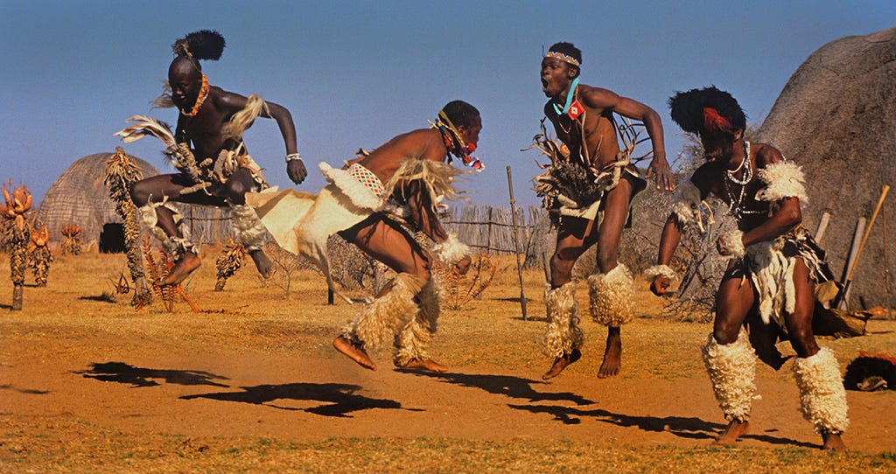
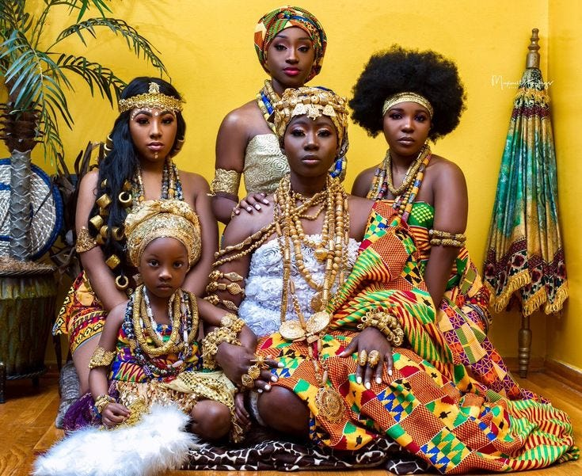
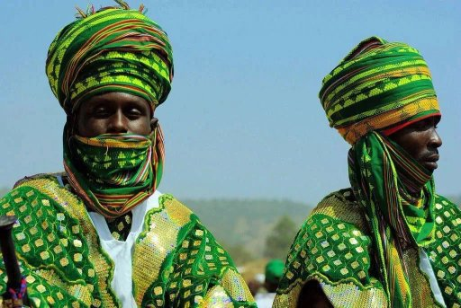
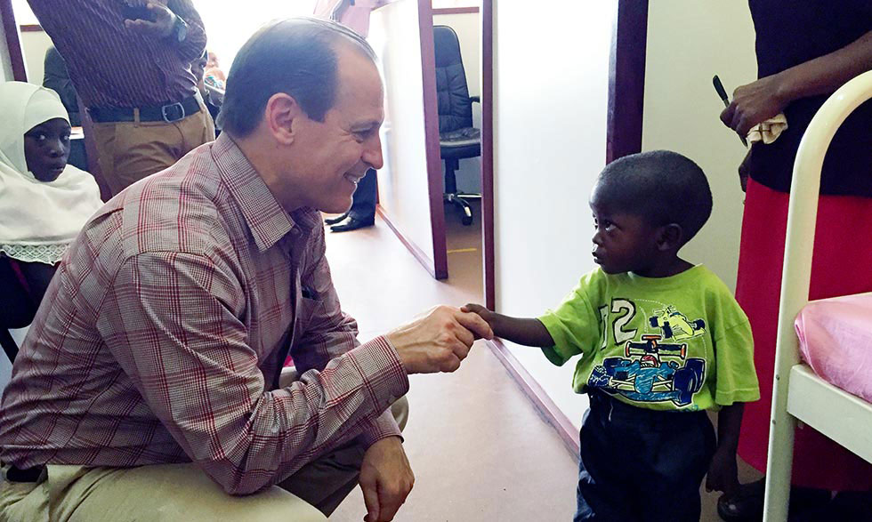
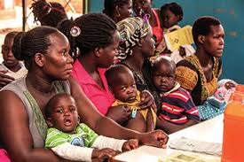
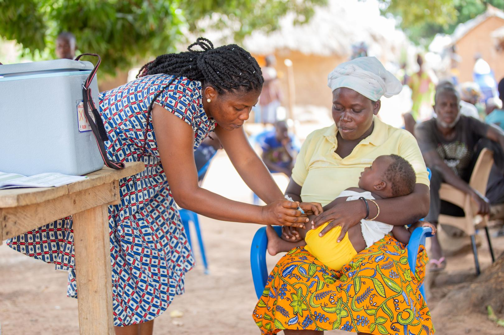
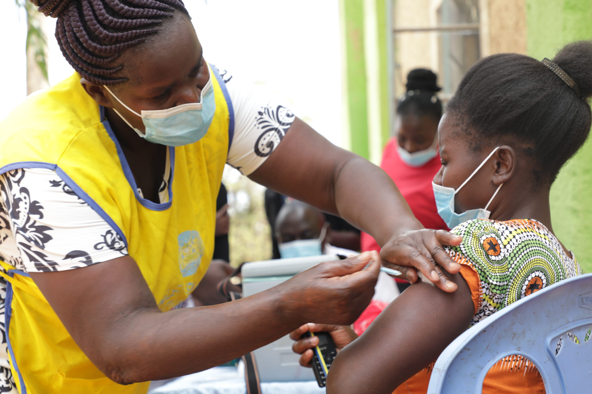

Africa is the world's second-largest and second-most populous continent, after Asia in both aspects. At about 30.3 million km2 (11.7 million square miles) including adjacent islands, it covers 20% of Earth's land area and 6% of its total surface area. With 1.4 billion people as of 2021, it accounts for about 18% of the world's human population. Africa's population is the youngest amongst all the continents; the median age in 2012 was 19.7, when the worldwide median age was 30.4. Despite a wide range of natural resources, Africa is the least wealthy continent per capita and second-least wealthy by total wealth, ahead of Oceania. Scholars have attributed this to different factors including geography, climate, tribalism, colonialism, the Cold War, neocolonialism, lack of democracy, and corruption. Despite this low concentration of wealth, recent economic expansion and the large and young population make Africa an important economic market in the broader global context.
African culture is diverse, vibrant, and rich in traditions, customs, and beliefs. It is a beautiful mix of music, dance, art, fashion, food, and spirituality. Africa is a continent of over 50 countries, each with its unique culture and history that is worth exploring. In this article, we will delve into the beauty of African culture and celebrate its uniqueness
African music and dance are a significant part of the continent’s cultural heritage. Music and dance are used to express joy, sorrow, love, and even spiritual beliefs. African music is characterized by the use of drums, percussion instruments, and vocals. The rhythms and melodies are hypnotic and can move even the shyest person to dance. Dance is an integral part of African culture and is often used to celebrate important life events, such as weddings, births, and coming-of-age ceremonies. The dances vary from country to country, but they all share a common feature — they are energetic and full of life. The dances are usually accompanied by traditional music and colorful costumes that add to the beauty of the performance. African art is diverse and ranges from sculptures, paintings, masks, and textiles. The art represents the continent’s heritage, history, and cultural beliefs. Many African artists use their work to preserve their cultures and pass them on to future generations
Africa, healthcare faces a lot of problems. One big issue is that governments don't have enough money, making it hard to build good hospitals and pay skilled healthcare workers. The lack of funds also means that many areas, especially rural ones, don't have good medical facilities or transportation to get people to hospitals. There's also the constant threat of diseases like Ebola and malaria, which strain the healthcare system and show how it's not always ready to handle emergencies.
Poverty is another big problem because people who don't have much money often can't afford basic healthcare, creating a cycle of sickness and financial struggle.
A significant challenge is the "brain drain," where well-trained doctors and nurses leave their home countries for better-paying jobs and a higher quality of life abroad. This makes it even harder for local healthcare systems to find qualified staff. Public healthcare services exist in different forms across the continent, but their quality and availability vary a lot. Expatriates, people living outside their home country, often prefer private healthcare, especially in big cities and tourist areas, where hospitals are better equipped and waiting times are shorter. With more people traveling internationally, there's a growing need for global health insurance. This kind of insurance helps people access healthcare anywhere and can even cover the cost of moving someone to a different country for better medical care in emergencies. To solve these problems, African governments need to find ways to get more money for healthcare, improve infrastructure, and make policies that encourage skilled healthcare workers to stay in their home countries. This way, they can build stronger healthcare systems that work for everyone.
While working in rural areas of Africa, such as Nigeria, I observed that a significant challenge faced by these communities is combating sickle cell anemia Sickle cell anemia (SCA) poses a significant health challenge in many parts of Africa, including Nigeria. Several factors contribute to the complexity of addressing sickle cell anemia in rural areas, making it a pressing public health concern. Here are some key aspects of the challenge:
 Sickle cell anemia is a genetic disorder that occurs when individuals inherit two copies of the abnormal hemoglobin gene (HbS). In Nigeria, and many parts of sub-Saharan Africa, the prevalence of the sickle cell trait is relatively high due to historical reasons. In regions where malaria is endemic, individuals with one copy of the gene (carriers or trait) have a survival advantage against malaria. As a result, the frequency of the sickle cell gene is higher.
Many rural communities lack sufficient awareness and education about sickle cell anemia, including its causes, symptoms, and implications. This lack of knowledge can contribute to misconceptions, stigma, and delayed or inadequate healthcare seeking behavior.
Rural areas often face challenges in terms of healthcare infrastructure. There may be a shortage of healthcare facilities, trained healthcare professionals, and essential medical supplies. This can result in delayed diagnosis, inadequate treatment, and poor management of sickle cell anemia.
Limited access to healthcare services, including diagnostic facilities, makes it difficult for individuals in rural areas to undergo early screening and diagnosis for sickle cell anemia. Early diagnosis is crucial for implementing preventive measures and timely interventions.
 Even when healthcare facilities are available, the cost of treatment can be a significant barrier. Affordability issues may prevent individuals with sickle cell anemia from accessing essential medications, blood transfusions, and other necessary interventions.
Cultural beliefs and social norms may influence perceptions and practices related to sickle cell anemia. This includes the stigma associated with the condition and challenges in implementing genetic counseling and family planning strategies.
Research and data collection on sickle cell anemia in rural areas may be limited. This lack of information hampers efforts to design targeted interventions and allocate resources effectively.
In rural areas, accessing safe and timely blood transfusions can be challenging. Adequate infrastructure for blood collection, storage, and distribution may be lacking, increasing the risk of complications for individuals with sickle cell anemia. Addressing these challenges requires a multi-faceted approach that combines education, healthcare infrastructure improvement, community engagement, and policy initiatives. Efforts should be made to integrate sickle cell anemia awareness and prevention programs into existing community health services, ensuring a culturally sensitive and community-driven approach. Additionally, collaborations between governmental and non-governmental organizations, as well as international support, can contribute to sustainable solutions for tackling sickle cell anemia in rural areas
Improving health outcomes for individuals with sickle cell disease (SCD) in Africa involves a comprehensive approach that addresses both preventive measures and supportive care. Here are some health improvement practices that could be implemented:
Implement newborn screening programs to identify infants with SCD early, allowing for prompt intervention and management.
Increase awareness about sickle cell disease among the general population, healthcare professionals, and policymakers to reduce stigma and promote understanding. Provide education on the importance of genetic counseling and family planning to help prevent the transmission of the sickle cell gene.
Ensure that individuals with SCD receive routine vaccinations to prevent infections, which can trigger painful crises and other complications. Promote hygiene practices and access to clean water to reduce the risk of infections.
Improve access to quality healthcare facilities, especially in rural areas, to ensure timely and appropriate medical interventions. Train healthcare professionals to effectively manage SCD, including pain management and complications.
Promote the use of hydroxyurea, an FDA-approved medication, to reduce the frequency and severity of pain episodes and other complications associated with SCD.
Ensure availability and accessibility of safe blood transfusions for individuals with SCD when needed, to manage severe anemia and other complications.
Provide nutritional support and education to individuals with SCD, as good nutrition can contribute to overall health and may help manage symptoms.
Establish support groups and counseling services to address the psychosocial aspects of living with SCD, including mental health support for patients and their families.
Encourage and support research on SCD to develop new treatment options and improve our understanding of the disease.
Advocate for policies that support the needs of individuals with SCD, including access to healthcare, education, and employment opportunities.
Involve local communities in health initiatives, ensuring that interventions are culturally sensitive and community-driven.
Explore the use of telemedicine to provide remote consultations and support for individuals with SCD, especially in areas with limited access to healthcare facilities. Implementing these practices requires collaboration between government agencies, healthcare professionals, non-governmental organizations (NGOs), and communities. Additionally, ongoing monitoring and evaluation are crucial to assess the effectiveness of interventions and make necessary adjustments.